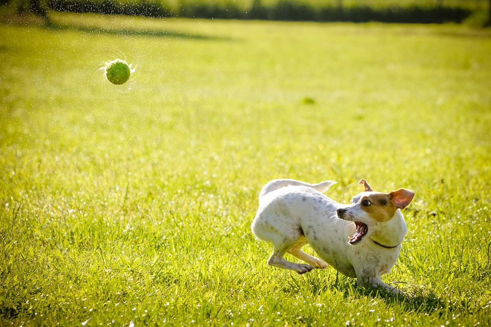
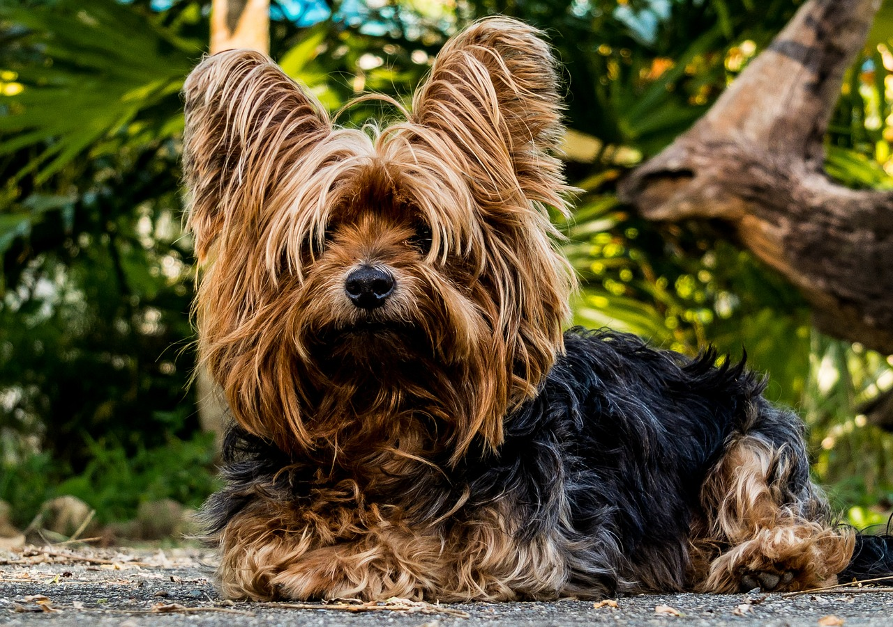
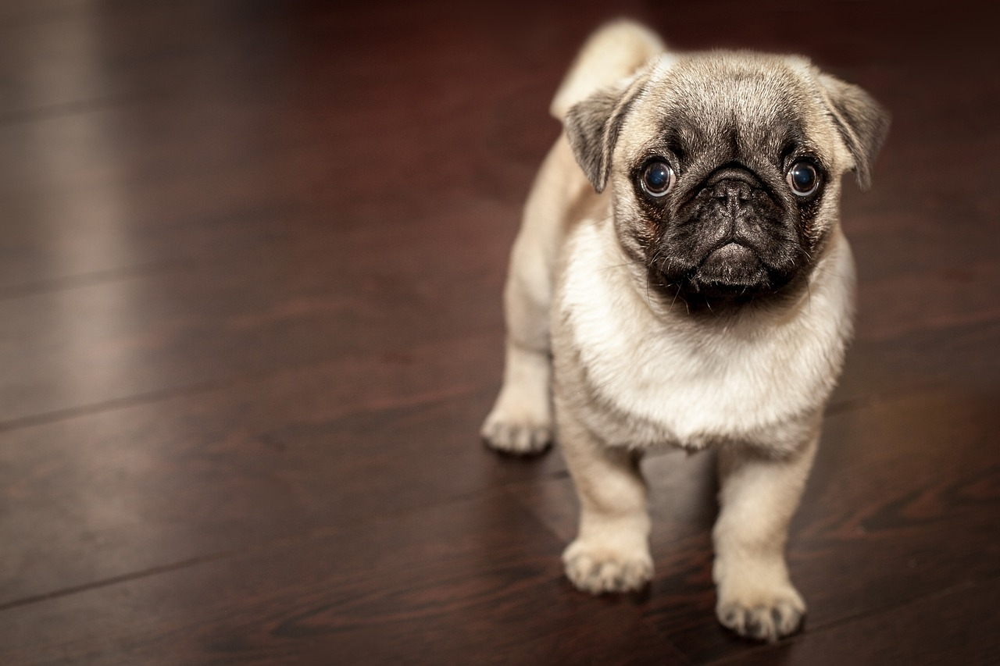
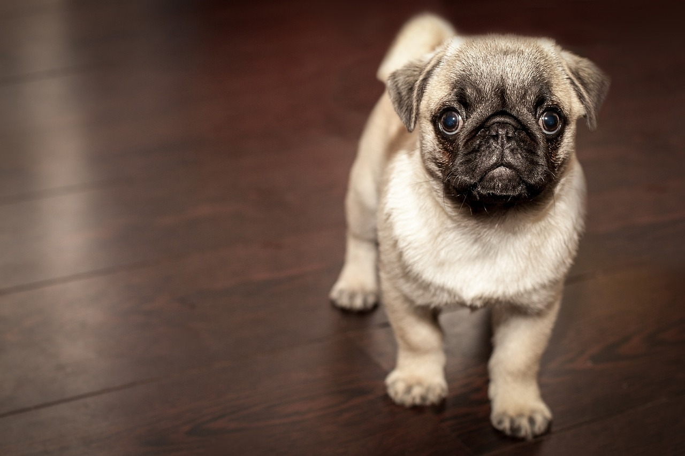

About Us
Durham House of Pet was founded on April 4, 1975, as the result of rapidly population growth in a little town, Durham. William Henry Gates IV dedicated his limitless love toward animals, and so he built this company to follow his love and passions. During the first few years of operating, the store focused mostly on dog and cat supplies. The business became more and more popular that we also expanded to snake products. Furthermore, we are not only provide you with pet's supplies but we also have pet's medical team to take care your pets.
We promise to provide with everything your pets need to live a happy life. At Durham House of Pet, you can customize your own's pet house; we will design it based on your references. We believe that our customers deserve the best products, the best quality and the best service.
Your Pets' Happniess, Our Mission
  
